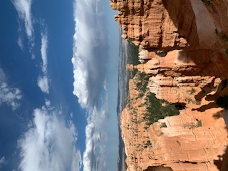
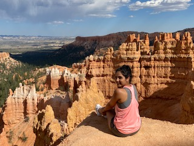

Why I loved visiting Bryce Canyon
Posted October 15, 2018
When I first reached the spot and looked at the beauty, I thought I was looking at a poster. So perfect, just like I had seen in the images. The hike was pretty good discovering different spots along the way.

Why it is worth your while
Posted October 5, 2018
Overall, it was a splendid experience,some of the structures of the canyon looked like it was perfectly carved by hand. The routes are narrow so be careful when you start hiking there, but if you are an adventurous person, you will find your way and enjoy every bit of it.